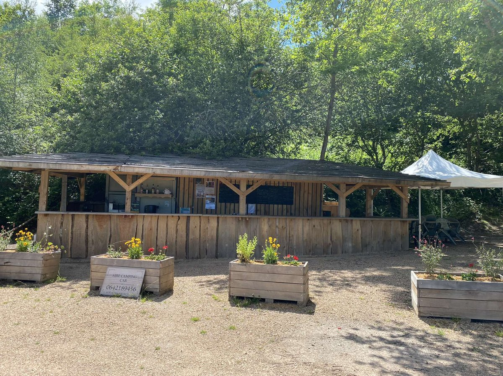
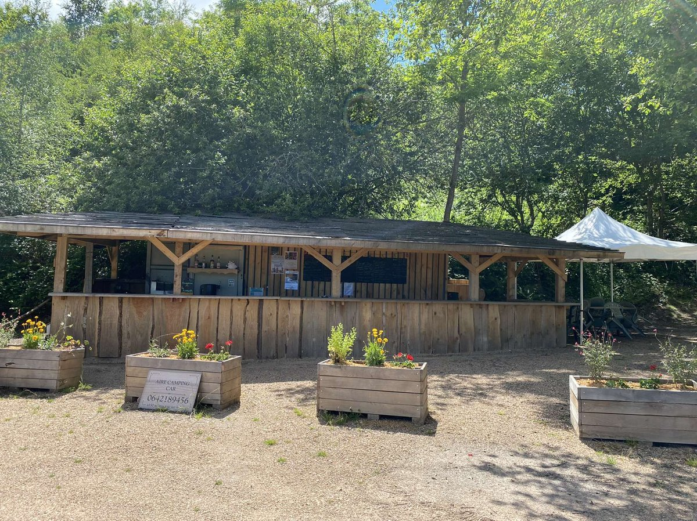

Burgers
The real taste
Golden artisan bun, juicy organic Charolais patty from our farm, melting cheese, crisp salad, fresh tomato and our silky house burger sauce. Served with our organic homemade fries. What better way to enjoy the superb lake view?
Butcher’s cuts
Authenticity on the plate
Beautiful organic Charolais cuts straight from our farm, cooked to perfection. Served with our crispy organic homemade fries, good mustard and a delicious local drink to elevate every bite.
Homemade sorbets
The art of freshness
Homemade from A to Z with carefully selected ingredients — sorbets crafted with a savoir-faire that could make top chefs jealous. Treat yourself to a refreshing, well-earned break during a stroll around the lake.


 
